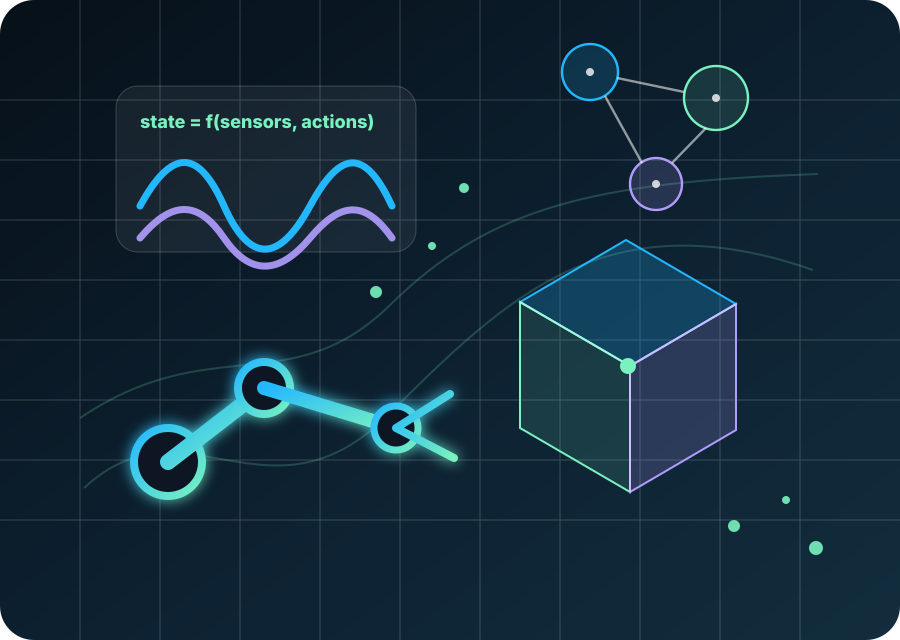

Representation
What is a physical world model? What variables should it encode beyond images and 3D geometry so that an embodied agent can predict, plan, adapt, and act?
Toward world models that do more than predict pixels: models that expose physically actionable state, reason about interventions, and support reliable robot behavior in contact-rich real-world environments.

Overview
World models for embodied agents are advancing through video prediction, 3D and 4D scene representation, and robot-specific action-conditioned modeling. Manipulation, however, requires more than visual appearance or geometry: robots must estimate how the world responds to contact, force, motion, material properties, articulation, stability, and uncertainty.
This workshop brings together researchers in robot learning, manipulation, computer vision, graphics, simulation, physical reasoning, multimodal learning, and foundation models to clarify what physically grounded world models should represent, how they should be built at scale, and how they should be evaluated through executable robot behavior.
Core challenges
Physical world modeling sits between visual prediction, spatial reconstruction, simulation, and robot control. The workshop centers on three connected questions.
What is a physical world model? What variables should it encode beyond images and 3D geometry so that an embodied agent can predict, plan, adapt, and act?
How can unstructured physical observations from cameras, robot logs, human videos, and simulators become robot-usable world state at scale?
How should models be tested when the goal is not only visual plausibility, but reliable physical observations, action feasibility, and successful real-world manipulation?
Topics of interest
Call for papers
Submission portal, deadlines, and formatting details will be updated after final workshop scheduling.
Short papers, position papers, work-in-progress papers, negative results, benchmark or dataset proposals, and research papers on physical world modeling for embodied manipulation.
Physical robot demos, executable world-model prototypes, multimodal sensing systems, manipulation benchmarks, real-to-sim-to-real examples, and interactive visualizations.
Program
Exact times and room assignment are TBD. The format emphasizes invited talks, contributed spotlight presentations, posters, live demos, coffee-break interaction, and community discussion.
Invited speakers
Profile photos are included for each invited speaker. Each portrait links to its public photo source.
AMI Labs & NYU
World models for embodied intelligence: toward systems grounded in continuous sensory experience and real-world interaction.
KIT
Developing humanoid systems that combine perception, manipulation, learning, and human–robot interaction to operate in complex real-world environments.
Northwestern University
Multimodal embodied agents: connecting language, vision, and action for grounded reasoning, physical-world understanding, and interactive planning.
Organizers
Researchers across robot learning, manipulation, 3D vision, embodied AI, simulation, and foundation models. Each organizer card includes a locally optimized portrait and a link to the public source page.
Participation
The workshop is designed for active exchange rather than a sequence of talks. Poster and demo tracks provide multiple ways for students, early-career researchers, system builders, and interdisciplinary contributors to participate.
The program will aim for balanced representation across career stage, geography, institution type, research background, and sector. Selected submissions from both poster and demo tracks will be considered for oral spotlights, Best Paper, and Best Demo recognition.
Accepted papers
Accepted papers, demos, and spotlight presentations will be posted here after review.
Contact
For submissions, demos, sponsorship, or logistics, please contact the corresponding organizer.